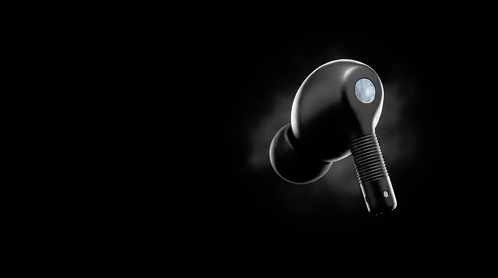
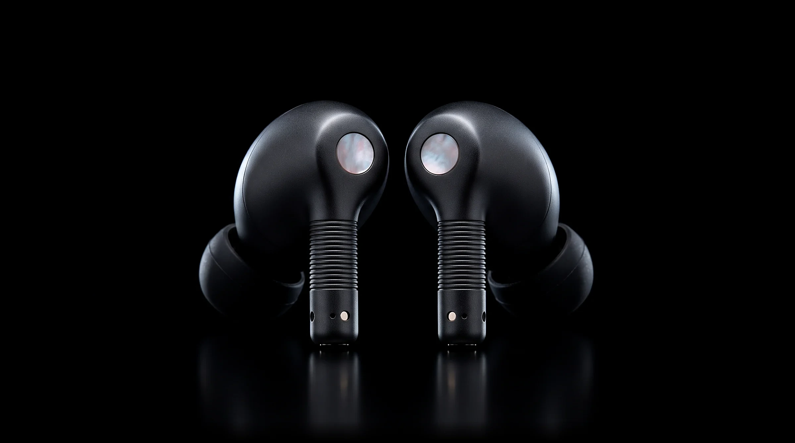
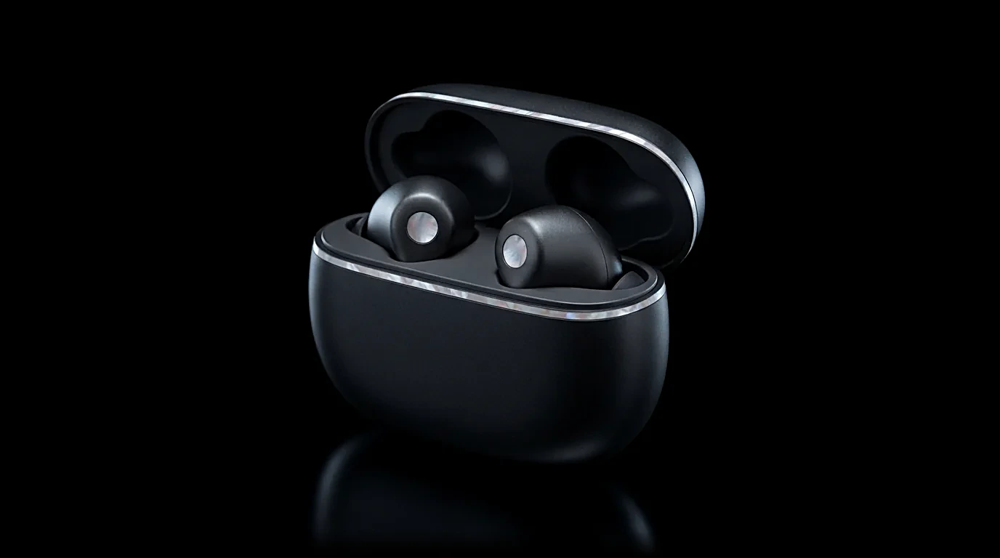

Squeeze. Play, pause or answer a call. Twice to skip ahead.

Nácar Onda
The world,
turned down.
Cancels up to 3× more noise than our previous earbuds.
₹24,900 Buy
Meet Nácar Onda. Our most effective noise cancellation yet, run by a chip that answers every sound around you with its exact opposite. Softer, deeper-sealing tips close the gaps other earbuds leave open, and six beam-forming microphones keep your voice clear on the loudest street. On the outside, a disc of polished mother-of-pearl marks each bud. Nácar, after all, means pearl.
Cancels up to
3× more
low-frequency noise than our previous earbuds
Retunes itself
48,000
times a second as the world around you changes

Adaptive Noise Cancellation
The city fades. The song stays.
Onda listens 48,000 times a second and cancels what it hears.
Every sound meets its opposite.
Outside
Onda answers
You hear
Onda plays a precise mirror image of everything it hears. The two waves meet and cancel, and what reaches your ear is close to silence.
Sound that stays put when you turn your head.

Custom driver
11mm
with a low-distortion amplifier for deep, clean bass
Spatial audio
360°
with head tracking that anchors a film to your screen
Lossless, up to
96kHz
24-bit from a paired Nácar Faro
The grooves are the remote.
Every control lives on the bud itself, so your phone can stay in your pocket.

Slide. Run a finger along the grooves to raise or lower the volume.
Hold the pearl. Touch and hold the disc to move between Noise Cancellation, Adaptive and Transparency.
Forty hours.
One pocket.
Per charge
8h
of listening with noise cancellation on
With the case
40h
in total, topped up by USB‑C or wireless
Quick charge
5min
in the case gives about an hour of play
Earbuds and case
IP57
dust, sweat and water resistant

- Noise cancellation compared with our previous earbuds, in low-frequency pink noise under lab conditions.
- Battery life with noise cancellation on at 50% volume. Varies with use and settings.
- Lossless at up to 24-bit/96 kHz needs a paired Nácar Faro.
- IP57 under IEC 60529 in lab conditions. Not for swimming.
- No-cost EMI on select cards. Terms apply.